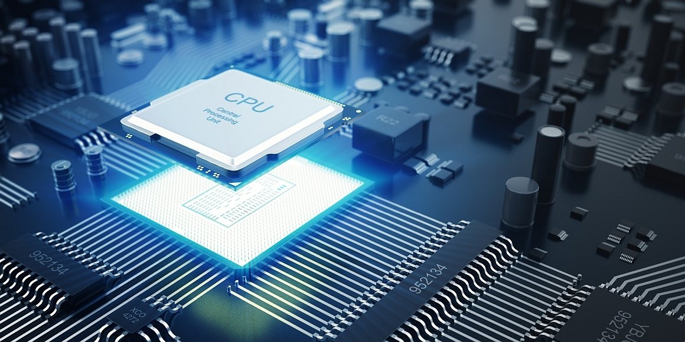
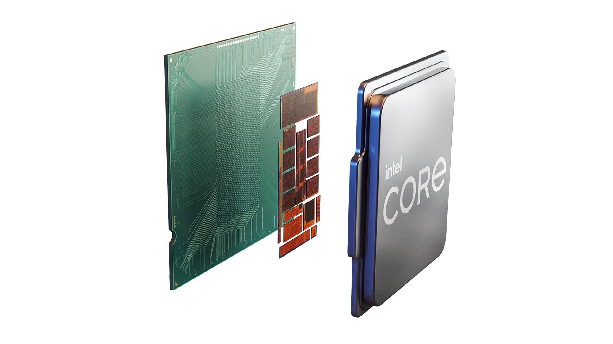
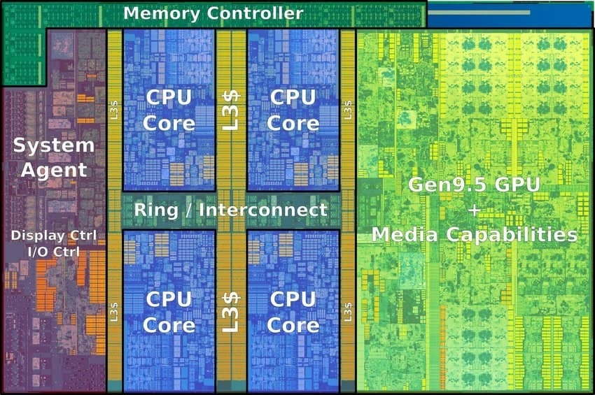
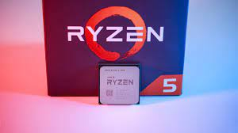

Procesor
Co je to procesor
Procesor patří mezi hlavní výpočetní jednotky nejen osobních počítačů, ale také například chytrých mobilních telefonů. Často je označovaný také zkratkou z anglických slov central processing unit – CPU. Procesory nejsou vyrobeny za účelem jediné funkcionality, nýbrž pracují tak, jak to aplikace potřebují. Zároveň je procesor jakýsi mozek počítače, řídí jeho ostatní části a jejich podíl na společném výpočetním díle celého systému. Hlavními výrobci procesorů do počítačů jsou společnosti Intel a AMD, proto bude článek zaměřen především na jejich produkty. Povíme si však také, jak CPU obecně funguje, jak je to s jeho jádry a vlákny a co vlastně znamená, když procesor taktujeme.
Jak funguje a k čemu slouží procesor?
Princip veškerých dnešních výpočetních systémů, a tedy i procesoru, je založen na zpracování binárních operací. Binární neboli dvojková soustava má samozřejmě pouze dva stavy, 0 a 1, které lze v procesoru díky jejich jednoduchosti snadno reprezentovat napěťovými úrovněmi. Princip veškerých dnešních výpočetních systémů, a tedy i procesoru, je založen na zpracování binárních operací. Binární neboli dvojková soustava má samozřejmě pouze dva stavy, 0 a 1, které lze v procesoru díky jejich jednoduchosti snadno reprezentovat napěťovými úrovněmi. Jednotlivé operace dohromady skládají instrukce, jejichž svazky se nazývají programy. Program je zpracováván sekvenčně, což znamená, že jeho instrukce procesor provádí jednu po druhé v takzvaných instrukčních cyklech.
Co je frekvence CPU?
Pokud funkčnost procesoru velmi zjednodušíme, můžeme tvrdit, že se jedná pouze o početnou soustavu tranzistorů, které velmi rychle mění své stavy podle toho, jak to prováděné operace vyžadují. Interval mezi dvěma pulsy z oscilátoru se nazývá frekvenční cyklus. V takovém čase je procesor schopen své tranzistory přepnout do jedničky a poté zpět do nuly. O změně stavu z nuly do jedničky referujeme jako o náběžné hraně a o změně jedničky na nulu jako o hraně sestupné. Množství těchto cyklů za jednu sekundu se nazývá frekvence procesoru. Jednotkou je Hertz (Hz), a jelikož dnešní procesory vykazují frekvence v řádech miliard hertzů, používáme v tomto spojení často předponu giga (GHz), případně mega (MHz, milion hertzů). Frekvence se také často označuje jako kmitočet či takt procesoru. Frekvence je jedním z hlavních faktorů, které ovlivňují výkon procesoru. Zjednodušený vztah říká, že čím vyšší frekvence, tím vyšší výkon. Toto tvrzení však musíme brát s rezervou. Pokud se dva jinak naprosto stejné procesory liší pouze frekvencí, ten s vyšší bude skutečně výkonnější. Celkový výkon procesoru však ovlivňují i jiné faktory, jako například jeho architektura, počet jader aj., pouze vyšší frekvence tedy výkonnostní převahu nezajistí. O těchto dalších parametrech procesoru si povíme později.
Co je boost frekvence?
Velká část procesorů Intel i AMD dokáže svou frekvenci přizpůsobovat automaticky. Zajišťují to technologie Turbo Boost (Intel) a Turbo Core (AMD), přičemž obě mají obdobný efekt. Když je váš procesor intenzivně vytěžován, zvýší dočasně frekvenci až po mezní „boost“ limit, čímž si zajistí dostatek výkonu. Pokud takový výkon není potřeba, frekvence zůstane nižší, a ve výsledku se ušetří energie. AMD do svých procesorů odlišených X na konci modelového čísla implementovalo novou technologii Extended Frequency Range, zkráceně XFR, která by měla při výrazné teplotní rezervě CPU automaticky přetaktovat ještě nad úroveň boost limitu. Modely s touto technologií jsou určeny výhradně pro uživatele s výkonnějším chlazením, než jaké je obvykle součástí balení procesorů, proto k nim AMD ani žádné chladiče nedodává, stejně jako to nedělá Intel u modelů s otevřeným násobičem. V tuto chvíli je dobré zmínit, že všechny procesory AMD Ryzen mají otevřený násobič.
Co jsou jádra procesoru?
O jádrech se dá s čistým svědomím prohlásit, že se jedná o samostatné výpočetní jednotky, a vícejádrový procesor lze považovat za vysoce integrované zapojení více jednojádrových. Jádra jsou na sobě výpočetně nezávislá, díky čemuž je procesor schopen v jednu chvíli zpracovávat několik různých instrukcí a obsluhovat tak několik programů najednou. Tato schopnost je stěžejní v otázce účinného multitaskingu. V dnešní době dokáže více jader využít čím dál větší množství aplikací, včetně her. Důležité je poznamenat, že procesorová vlákna výkonnostně nezastupují plnohodnotná fyzická jádra, protože s nimi sdílí hardwarové prostředky, čímž je jejich výkon omezen. Přestože se taková technologie považuje za efektivní, nemůžeme tvrdit, že dvoujádrový procesor se čtyřmi vlákny může být roven plnohodnotnému čtyřjádrovému procesoru. Jak již bylo zmíněno, technologie firmy Intel se nazývá Hyper-Threading, procesory AMD využívají technologii SMT.
Jak vybrat procesor
Procesor si vyberte hlaně podle parametrů nejčastěji to bývá čím viší staty tím lepší, pokud budete schánět procesor s integrovanou grafickou kartou osobně bych sáhl po značce Amd. V poslední době vydal intel novou generaci procesorů (12.) ale je v tom háček nová pamět RAM kterou k tomu budete potřebojat je drahá a né moc výkonná ale časem se to určitě zlepší. Pokud budetet vybárat budget procesory osobně bych sáhl bud po amd procesoru páté řady očáslovaném 3600 nebo 5600, u Intelu by měl být zajímavý intel core i5 dvanácté generace.
